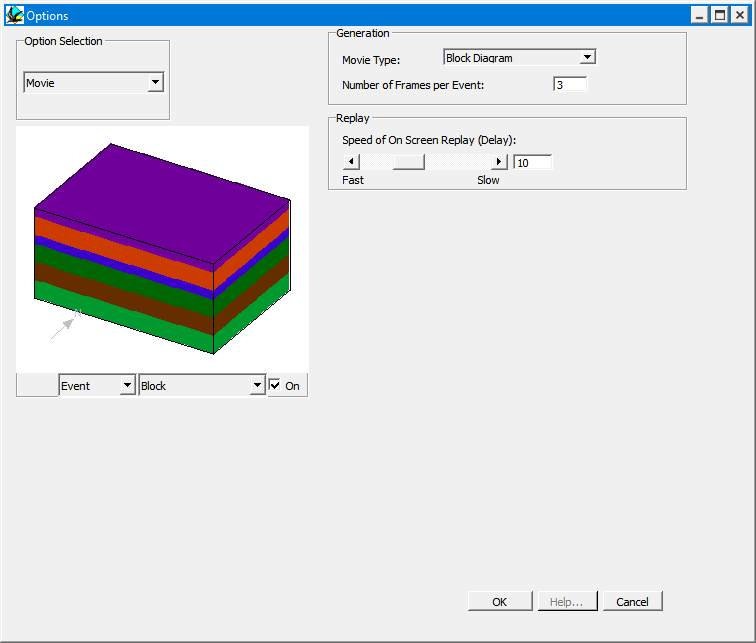

Movie options
Movie Creation
Step 1: You must first have a history of events available for a movie to be created. Generate the sequence of events required to be animated.
Step 2: Select the File > Movie > Create option. Open a file with an appropriate name. The filename .nmv will be appended.
Step 3: Noddy will create a series of PNG files based on the Number of Frames per Event value set in the Edit > Movie Option. The greater the number of frames stored, the smoother the movie, however, the more PNG files there are to be created/loaded and saved. Disk storage should be taken into consideration when creating movie animations.
Movie Loading and Playback
Step 1: To load a movie (.nmv) file, you must initially have a history available. If the File > Movie option is not enabled, simply drag and drop a Base Stratigraphy icon into the History window. The File > Movie option should then be available. Select an appropriate movie file.
Step 2: The amount of time taken for a movie to load will depend on the number of animation elements and PNG files to be re-played. Wait until the movie has accessed all files, and then the first scene of the animation should be displayed.
Step 3: The movie can be played with the following controls:
- Clicking in the window with the left mouse button moves the animation forward one frame
- Clicking in the window with the right mouse button moves the animation back one frame.
- Shift and left mouse click in the window runs the entire animation at the frame rate specified in the Edit > Movie Options window.
These animations can be read back in from disk by selecting Load Movie from the File menu.

| GROUP | NAME | FUNCTION |
|---|---|---|
| Options | Movie Type: | Type of geological or geophysical visualisation to use for animation |
| Number of Frames per Event | The number of intermediate frames for each deformation event | |
| Speed of on Screen Replay | The relative speed of on screen replay of the movie |
Noddy · open source under the MIT licence · Loop3D/noddy_qt